Жду пока мой код выполнит обучение модели Случайный лес, потому распишу то, что было на уме в последнее время)
Я тут пытался поискать тирлист персонажей из Повести о конце света, но ничего адекватного и современного не нашёл, потому я хочу расписать все бои и персонажей в этом посте, что мне понравилось и что не очень, может кто захочет это почитать или посмотреть.
Боги решили уничтожить человечество, но тут вскрывается правило, что можно устроить рагнарёк, который заключается в 13 поединках типа дуэль, то есть 1 человек против 1 Бога.
Как развивается сюжет: сначала бойцы выходят на арену, их представляют, они обмениваются ударами и бац, предыстория одного из героев, потом ещё немного битвы и вновь предыстория, но уже второго бойца, мы понимаем почему и за что они сражаются, а после один умирает, а другой становится победителем поединка, и так 13 раз... (на данный момент, в манге показывают 12 бой из 13).
Также, между поединками могут показать героев из будущих поединков, их реакцию на предыдущий бой или что-то подобное. Впрочем, могу сказать что все моменты между поединками мне очень импонируют, как в ван писе, когда автор раскрывает что происходит в мире, где когда-то побывали главные герои.
Также на всякий случай напишу, что не буду спойлерить победителя поединка) наверное. И я буду сильно топить за Богов, их тут сделали интересно, да и ради них и начал читать эту мангу.
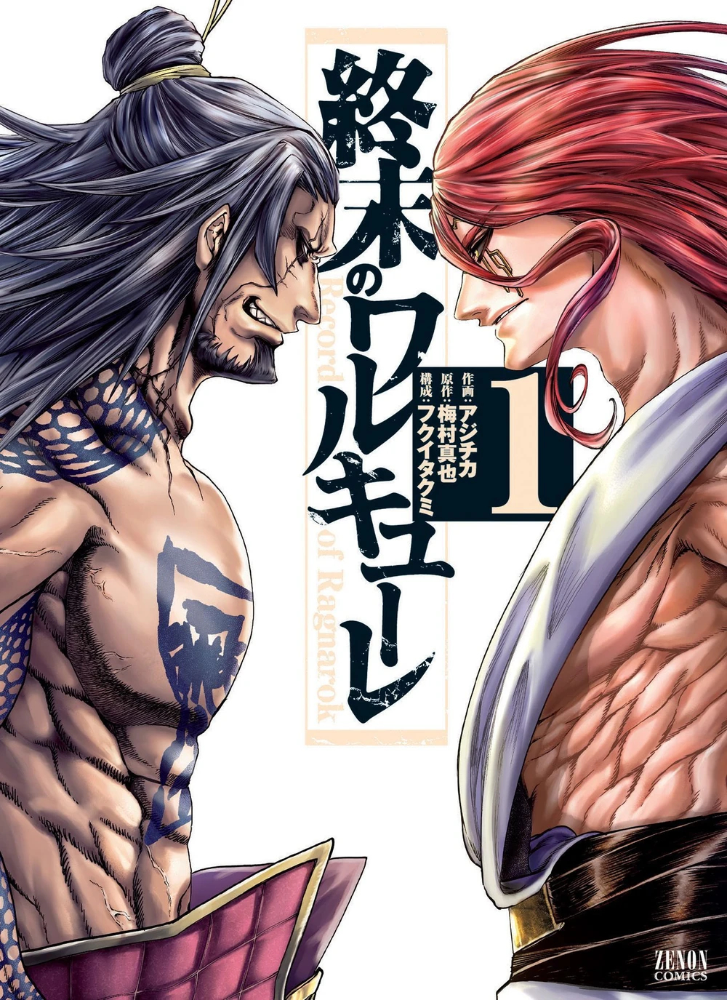
1. Ну, в первом бою нам показали просто здоровенного и ловкого бугая человека, который очень хочет драки, не важно с кем, главное с достойным противником! (Ставлю 0,5, меня впечатляет его предыстория, но если так подумать, в нём мало что интересного)
2. А вот с Тором слегка иначе, его нарисовали ну просто шик, мне очень понравилась его "Японизация" длинные красные волосы и несколько шрамов (или не шрамов а следы от молний, я так и не понял) на лице и теле, он на самом деле тоже хотел сразиться с достойным соперником, как и Люй Бу. (Ему ставлю 0,7, у него предыстория скучновата, рассказали как давным-давно он сражался с великанами и то что они не смогли дать ему нормального боя, но дизайн просто ммм)
3. Валькирия тут миленькая, высокая, сказала всего несколько фраз за сюжет и больше её не показывали, что грустно (0,5)
4. Так как это был первый бой, то я бы назвал его ознакомительным, там не так много событий, но бой считаю интересным, смотреть как Тор вшыряет свой молот классно (я не фанат Тора в этой истории, честно) (1)
5. О, ну тут моя главная претензия к этому бою и тот самый момент Х, так как это не жожо, то автор добавил такую штуку, опишу её так, представьте как 2 копья летят в сторону друг друга и они сталкиваются, после чего одно из копий уничтожает второе и летит дальше (самый яркий момент битва Дио с Джотаро, когда последний ударил в колено) ну так, мне это не нравится, потому тут будет такой балл (-1)
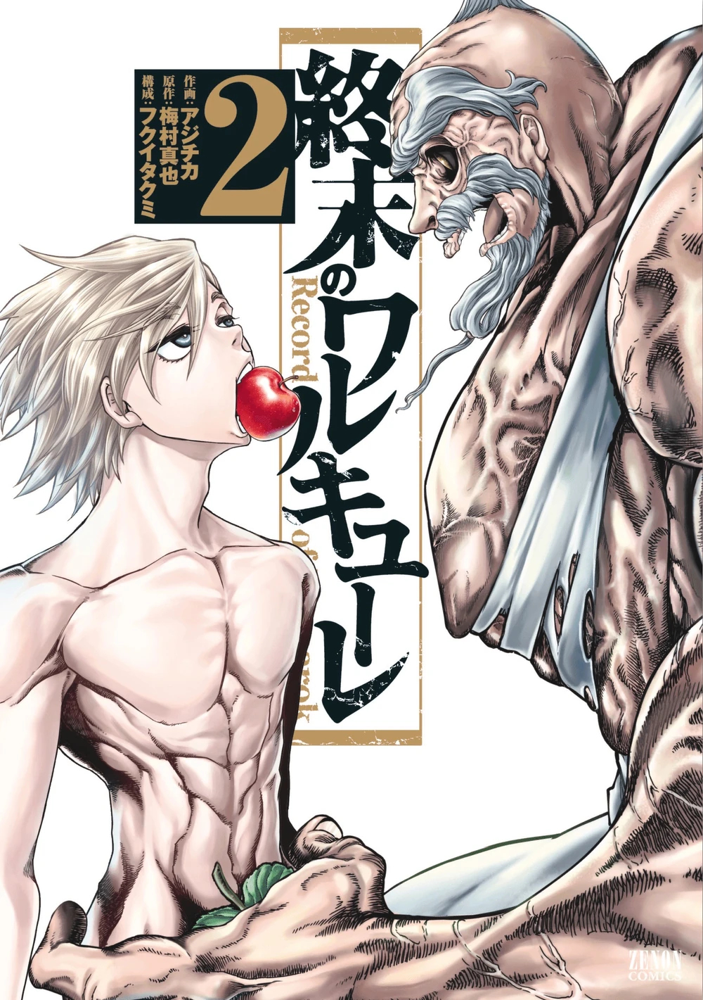
1. Адам классный, способность интересная (да у некоторых героев среди людей есть способности), история такая, Еву судят за то что она съела яблоко, заходит Адам в зал суда с корзиной яблок и сжирает их, забирая свою жену, лично мне понравилось как автор показал отношение Адама к Богам, дизайн у него своеобразный, ну то есть его нет, он ходит голым, листик в области паха не в счёт (1)
2. Ух, Зевс необычно выглядит, по факту это дед на стероидах, конечно, его старших братьев показали намного лучше и моложе, как ни странно, но что есть то есть, в предыстории рассказывают как он своего отца избивал (предыстория предсказала весь бой с Адамом)) (0,8)
3. Валькирия тут полторашка, ну и балов ей накину столько же (1,5-1 дизайн библиотекарши ну такое)
4. Бой был интереснее предыдущего, он меня впечатлил гораздо больше, тем более он тут кулачный, за все 12 битв, что я прочитал, чисто кулачных боёв 2 и этот лучший! (1)
5. Я бы мог сказать что тут есть элементы момента Х, но его тут адекватно обыграли, потому штрафа не будет
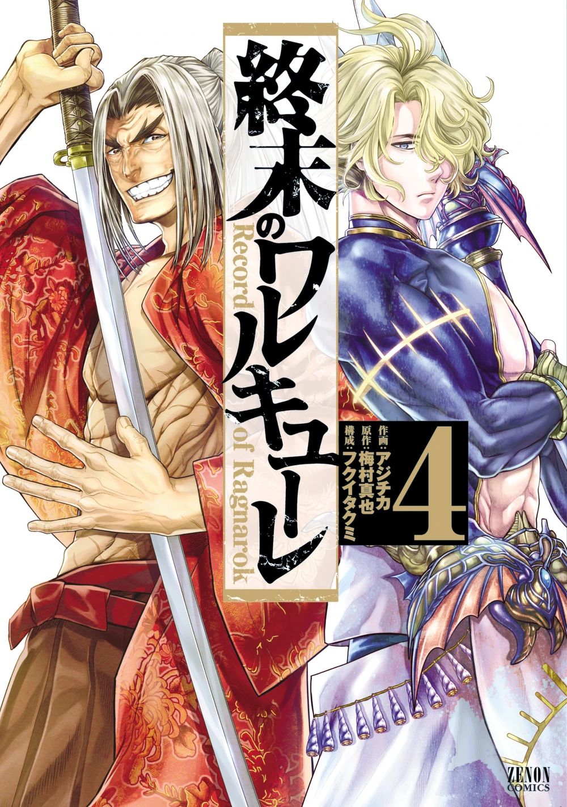
1. Мы подошли к моему одному из любимых людей, в этой истории, всё что было с Сасаки, мне очень понравилось, его способность, предыстория о том как он вечно всем проигрывал и учился на своих ошибках, его дизайн тоже уникальный (ну, почти), если остальные герои показаны в молодости, то Сасаки чисто старец с катаной, безоговорочно (1)
2. Что насчёт Посейдона, среди всех братьев он мне нравится меньше всего, его высокомерие оправдано, но в целом он неприятный, способностей с водой не показал, только трезубцем машет, даже не бросал его в оппонента (а он мог им управлять), предыстория ме, она нужна только для того чтобы показать как он убил своего старшего брата Адамаса, но за его зелёные ботиночки накину балов (0,6)
3. Валькирия тут прикольная, высокая, с шизой, с грудью...перестарались, но мне нравится (0,8)
4. Бой тут больше в тактику и в предугадывании действий противника, а что было в конце, ну просто шик, прям абсолют аниме (1)
5. Тут не было момента Х! (0)
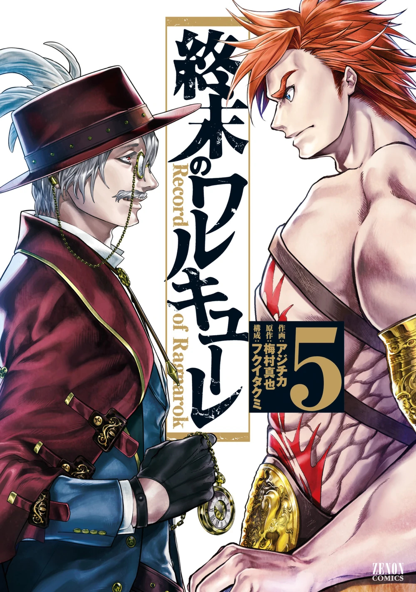
1. Джек неоднозначный, не как в Жожо (да в жожо был Джек Потрошитель) стройный дед, что расставляет ловушки, когда читаешь предыстрию чувствуешь себя неприятно, но после неё можно понять почему он такой...такой стрёмный дед, его можно назвать гедонистом, живёт ради кайфа, из-за его странной особенности, которую с натяжкой можно назвать способностью (0,5)
2. Геракл мне напомнил Джонатана, здоровенный амбал с невероятной справедливостью (также в него ножи втыкали, прям как в Джонатана), предыстория не о чём, рассказали как он выпил жижи и получил силушку богатырскую (0,5)
3. Валькирия тут сбалмышная полтарашка, что любит бдсм, иначе сказать не могу (0,5)
4. Бой классный и прям по хорошему жожный с "ты думаешь я ничего не предусмотрел?" (1)
5. Тут был момент Х, но он обыгран, и прям очень хорошо, так что (0)
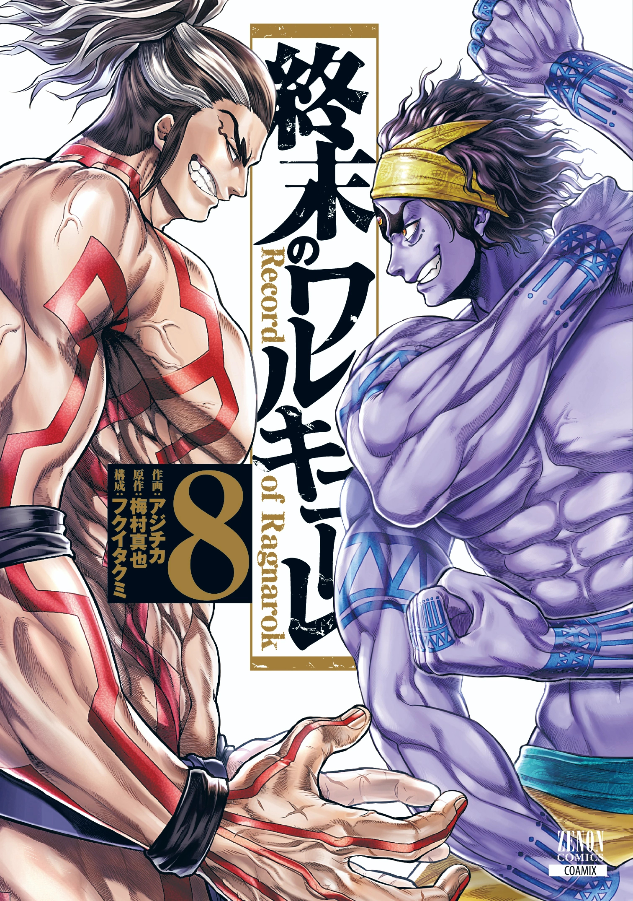
1. Райдена представили забавно, в его первое появление он был окружён по меньшей мере 10 вуменами, которые были без ума от его мышц, его даже можно сравнить с Адамом, но гигачадной версией, так как Райден выше Адама в 2 раза , предыстория мне не понравилась, типа, он всю жизнь сдерживал свою силу (0,6)
2. У Шивы очень прикольный флешбек, где он со своим другом избивал всех сильнейших богов индийского пантеона, прям круто, 4 руки уже необычно, в основном Боги очень похожи на людей, так что это важная особенность, а ещё он фиолетовый, как Танос (0,7)
3. Валькирия здесь здоровенная бой баба с большим сердцем (0,6)
4. Бой кулачный, как второй, но впечатлил он меня меньше, хотя штучки из Сумо прикольные, даже Шива был поражён (0,8)
5. Здесь есть момент Х, потому (-1)
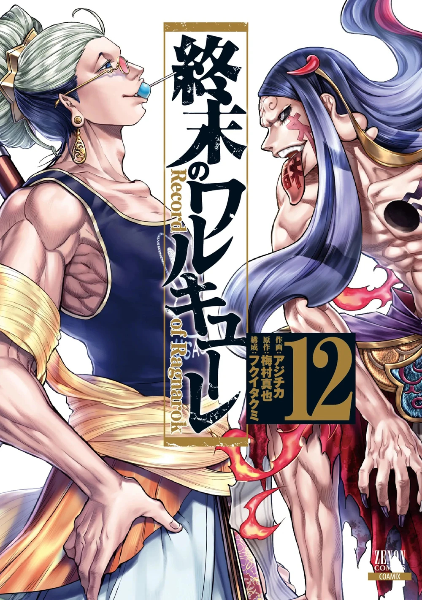
1. Будда является одним из моих любимых героев среди Богов, дизайн классный, привычка хавать сладости классная, способность классная, флешбек ну просто классный, индийская мифология в истории передана достойно (1)
2. 7 Богов удачи это ложь, на самом деле это Бог счастья Зерофуку, что развалился на 7 и стал жить так, флешбек мне не зашёл, слёзовыжималка, не интересно, дизайн богов удачи мне пришёлся по душе, но не дизайн Зерофуку, просто злой ребёнок (0,7)
3. Валькирии тут нет (0)
4. Бой прикольный, способность Будды предсказывать будущее очень интересная, так как он предсказывает не совсем будущее, а то что сделает душа и он типа читает душу, бой разделён на две фазы(1)
5. Тут нет момента Х
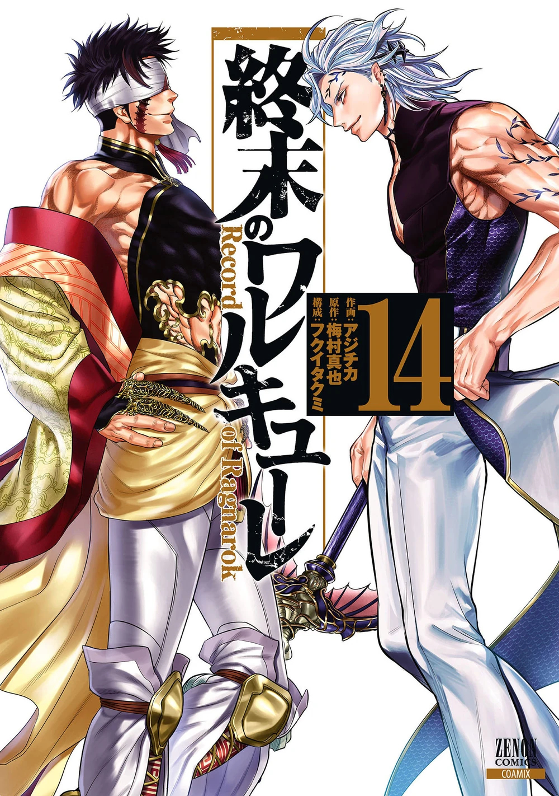
1. Цин занимает 1 место в топе всех героев у зрителей, дизайн одновременно и импонирует, и вызывает сомнения) Способность у него также необычная, как и у многих людей в этой истории, она проявляется в его глазах, типа, он может видеть все основные точки существ, но если он увидит рану, то эта рана отразится на нём (я не знаю, что курил автор, чтобы придумать такой дебафф), также он с помощью воздуха из рта может ослаблять атаки оппонента, надавали ему способностей конечно много.. Предыстория грустная, но не зацепила (0,8)
2. Аид прекрасен, и дизайн, и мотивация (у многих богов в этой истории мотивация это просто ощутить вкус битвы), у него из необычных способностей только кровь, которая делает его и копье сильнее. (1)
3. Валькирия тут очень похожа на Валькирию Джека Потрошителя, полторашка (1-0,5) — ставлю 0,5
4. Бой хороший и динамичный, в один момент оба хохотали, так как почти у всех пар в поединках есть что-то общее, то тут это титул императора, что Цин, что Аид являются императорами своих земель и каждый пытается доказать, что он единственный и сильнейший(1)
5. ААА здесь есть момент Х! (-1)
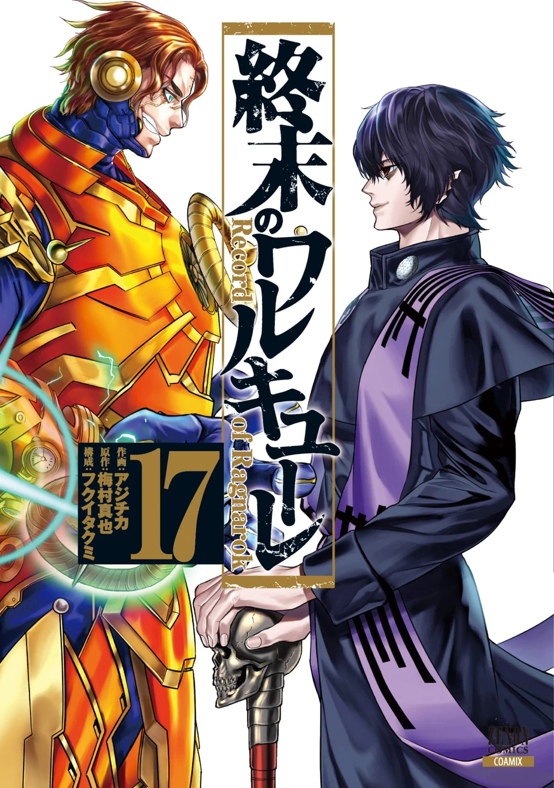
1. Ну Тесла здесь гигачадище, эксцентричный, эгоцентричный и сила у него связана с электричеством, до того, как он залез в костюм, он выглядел потрясно а в бою, ну не особо, предыстория пускай и грустная, но интересная, в ней рассказывается почему он решил стать учёным (1)
2. Вельзевул неоднозначен, сначала он не вызвал симпатии, но после некоторого времени я принял его, наверное его эльфийские ушки портят образ, но в целом прикольно, предыстория интересная и даже связана с глобальным сюжетом. Он тоже своего рода учёный и способность у него связана с вибрацией (1)
3. Валькирия тут с новым дизайном и высокая, из-за любви к науке её поставили в паре с учёным (1)
4. Бой тоже отличается от других, Тесла вечно глаголит и раскрывает свои способности, а Вельзевул терпит, там есть захватывающие моменты, но если так подумать, то бой сумбурный (0,5)
5. Тут нет момента Х (0)
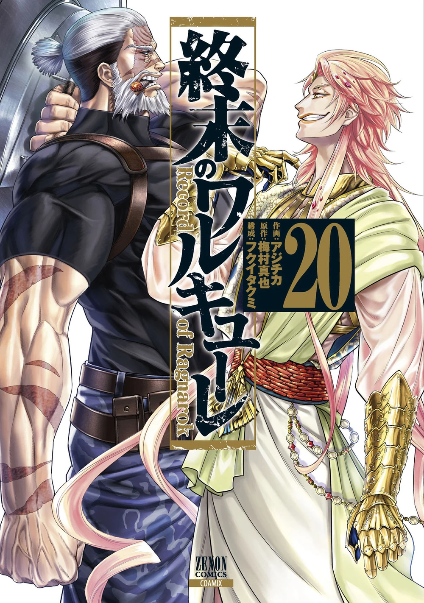
1. Леонид принарядился в камуфляж современного военного и выглядит никак грек, а как американец, в предыстории он крутой мужик, который сделал крутой поступок (ну все вы знаете про подвиг 300 спартанцев) (1)
2. Аполлон мой любимый бог среди всех богов в истории, выглядит шикарно, в предыстории раскрывается, что он был незаурядным богом, который добился всего сам, а его фраза "Познай самого себя " прям очень хорошо раскрывает его, из способностей у него артефакт в виде нитей, из которых он может сделать буквально что захочет, от перчаток до лука (1)
3. Валькирия с новым дизайном, снова! Её в битве показывали много, и она часто поддерживает Леонида (если так задуматься, то с 8 битвы все валькирии получили больше экранного времени и это очень хорошо) (1)
4. Бой здесь шикарный, инициатива переходит от человека к Богу и наоборот, вот вроде Леонид сейчас свалится от ран и бам, Аполлон лежит в своей крови. И я только сейчас вспомнил, что начало боя тоже был в основном кулачным, так что а истории 3 кулачного боя, а потом Аполлон решил взяться за лук. (1)
5. Ну почему тут он есть, ну зачем он тут… (-1)
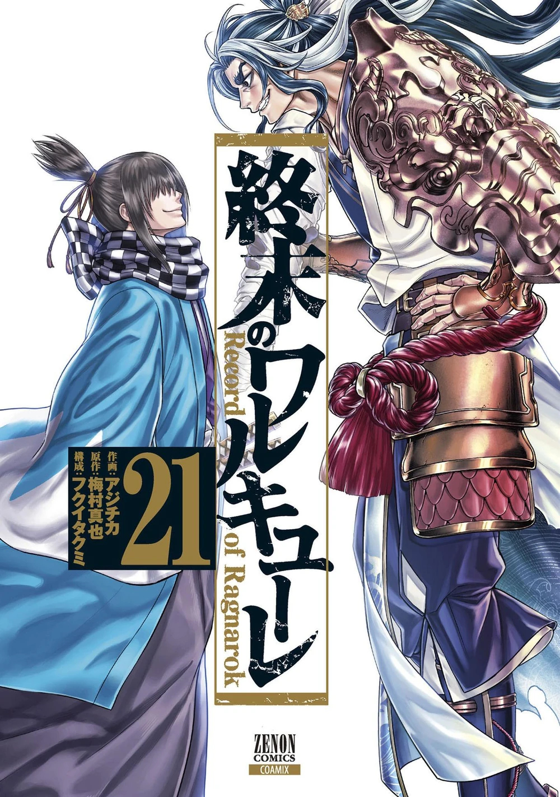
1. Это сын сюжета и любимчик автора манги (он не смог это скрыть), его показали после третьего или четвёртого поединка и этого персонажа я вижу так: «Ух, как же я хочу кого-нибудь убить», ну такое мне не по душе, дизайн окей, мелкий пацан, благодаря своему телосложению может буквально летать по полю, он очень быстрый и это его главная сила. (0,3)
2. Сусанно невероятный, у меня других слов нет, насколько он хорош, он просто здоровенный скуф (но не лысый), по сюжету раскрывается, что он очень хотел сразиться с каким-нибудь великим мечником и им оказался как раз Соджи, что грустно, я бы посмотрел битву Сасаки Коджиро (из 3 раунда) с ним. Также мне запомнился момент, когда Боги решили, что должен пойти Анубис, то заходит Сусаноо и утверждает, что идёт именно он, Анубис не смог противостоять харизме Сусаноо и просто сдался (1)
3. Ура, третья уникальная валькирия не полторашка, но её было мало (0,8)
4. Это была очень затянутая битва (автор же должен показать своего любимого персонажа во всей красе), но её было интересно читать, апогей всей битвы был тогда, когда Сусанно получил меч из воздуха, но конец битвы это рояль в кустах, это мне не особо понравилось, но автору виднее. (0,5)
5. Тут нет момента Х (0)
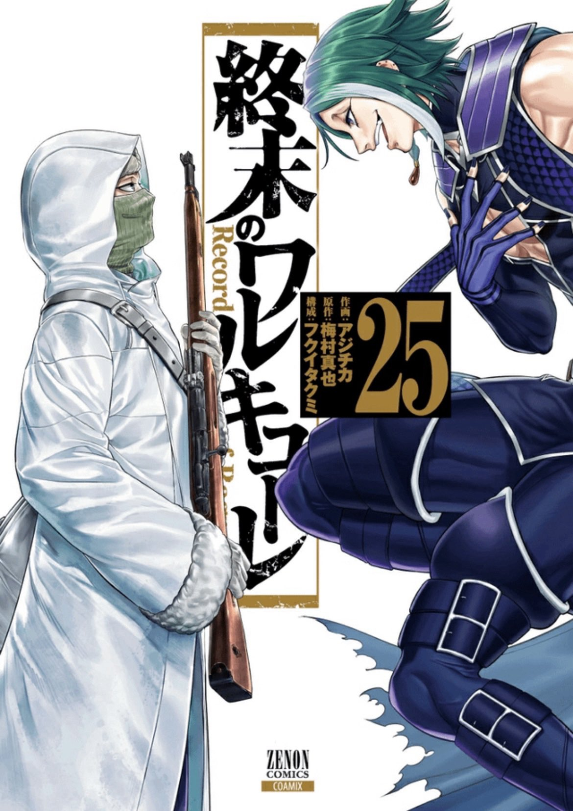
1. Ух, это ещё один из моих любимых персонажей среди людей, молчаливый мелкий пацан с винтовкой и пёсиком. История списана с википедии, даже рассказали, как его ранили во время Советско-финляндской войны (да, он убивал советов, за это осуждаю). В бою он шмалял из винтовки, что гениально, только он использовал огнестрел во всей истории (1-0,4(моё осуждение я расцениваю в 0,4))
2. Локи был показан с первых глав, был одним из главных реакционеров на бои, его способность превращаться в того, кого он касался банальная, но он её выкрутил в абсолют, так как он может создать армию из иллюзий (в бою он использовал проекции Тора, Одина и Геракла). Дизайн ну норм, также он как скорпион из мортал комбата из рук цепи создаёт. (0,8)
3. Это самая, на мой взгляд, красивая и милая валькирия из всех! (1)
4. Бой в этот раз был коротким и масштабным, здоровенный финский лес, где Симо бегает и шмаляет, то по копиям, то по Локи, а он пытается его найти. (1)
5. Здесь нет момента Х. (0)
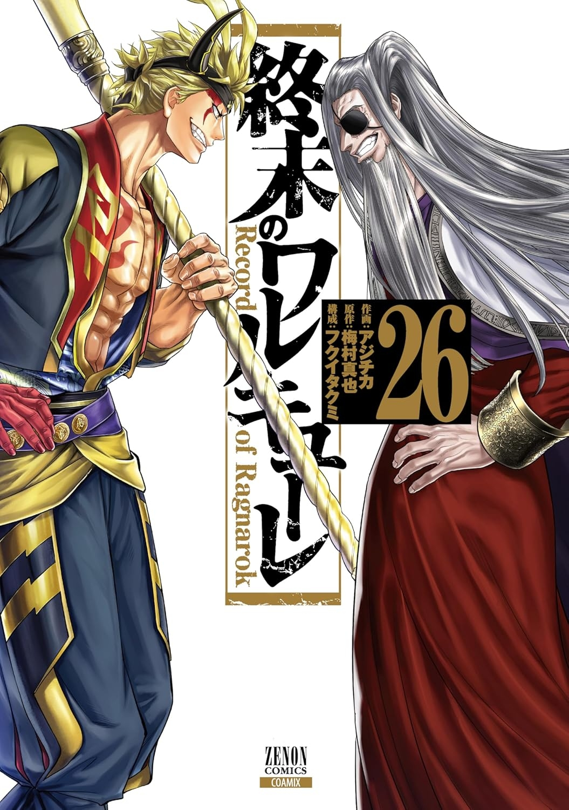
1. Кинтоки появлялся ранее в сюжете, как браток Будды и мне стало интересно, кто такой этот Саката Кинтоки, но лора к нашему времени не сохранилось, потому автор придумал свой и мне понравился. Дизайн у него необычный, по лору он на половину демон с гигантским топором, потому у него имеется 1 рог, и длинные ногти, у него вместо обуви какая-то дощечка с лезвием, как каблук, на вид в этом очень трудно ходить (0,8)
2. Один Один Один, он с 1 главы уже вызывал странные подозрения, так как больше всего хотел уничтожить человечество, но зачем? Это спойлеры, да и он не так много рассказал о своём плане,его предыстория на равне с предысторией Кинтоки, в этот раз автор прям постарался и написал очень хорошое и грустное прошлое обоих персонажей. Насчёт дизайна, у него их два, боевой и не боевой, не боевой режим мне по душе, боевой не особо, у него повязка пропадает, но это всё не важно, так как у него самый богатый реестр способностей, всего 18…восемнадцать! И лечение и атака, короче, швейцарский нож. (0,6)
3. Валькирия тут снова полторашка, но уже не копия валькирии 4 и 7 раунда, так что (0,6)
4. Битва ещё не окончена, но это самая жестокая битва, на мой взгляд, что там творит Один с Кинтоки это жуть какая-то, но битва всё ещё продолжается, думаю моё мнение изменится, когда я узнаю кто победил (в этот раз болею за Кинтоки).
5. Пока момента Х нет)
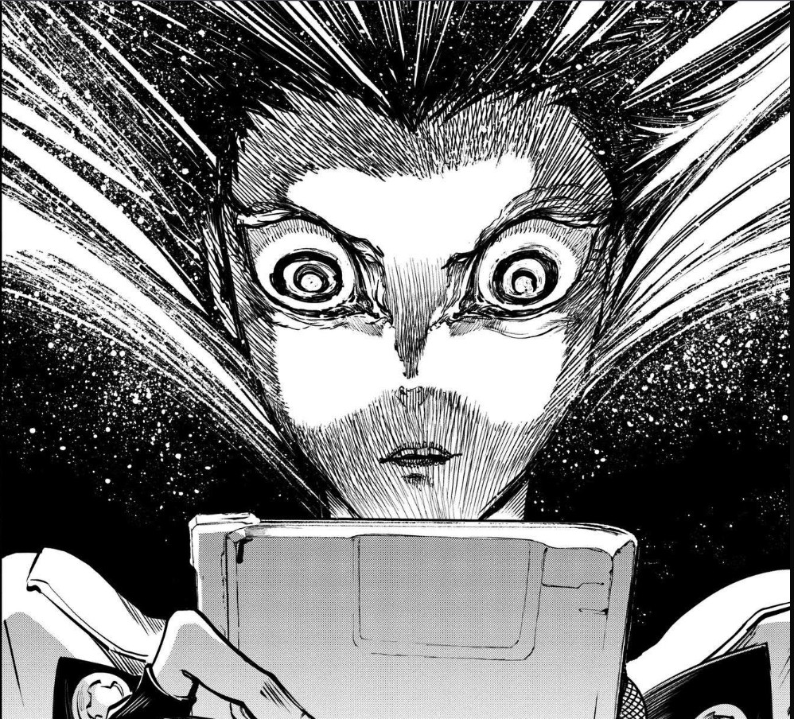
Валькирия, которая начала рагнарёк, забавная такая вумен, в манге ей иногда рисуют очень забавные рожи, особенно когда она удивляется.
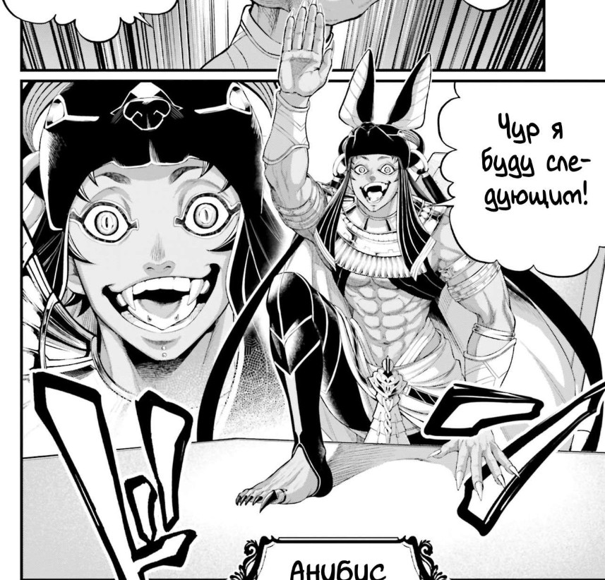
Будущий финальный боец со стороны врагов, к сожалению, его мотивация — это подраться с сильным соперником. Также, хочу добавить, что есть вероятность, что он будет драться с Распутиным и это был бы сильный контраст между ними, типа есть миф, что Распутина несколько раз пытались убить, но он выжил (хотя, от пули в живот он увернуться не смог) и он сражается против Бога, который сопровождает людей в загробный мир, ну здорово же звучит.
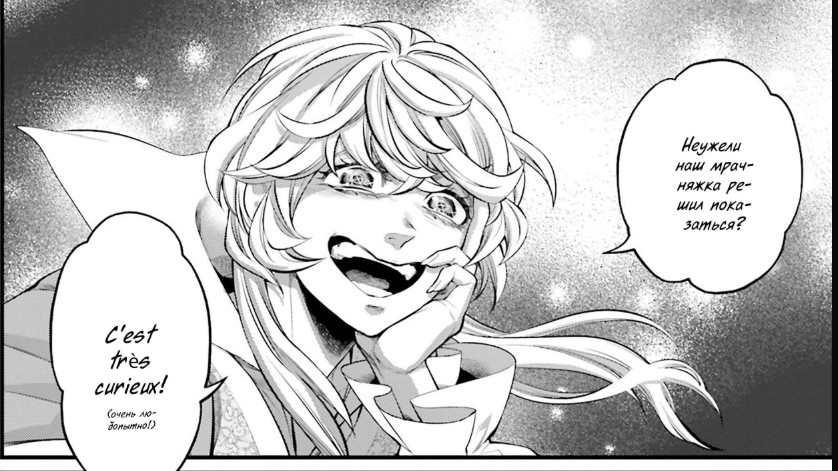
Тоже один из будущих бойцов, но со стороны людей, про него известно мало, но он показал пару трюков… например переоделся в Брюнхильду и говорил её голосом… Биврёст сломал там, ну короче, тоже имба и скорее всего он будет сражаться в последней схватке, а не Распутин.
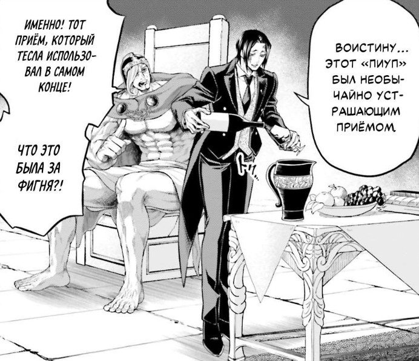
Пускай будут вместе, так как они в основном вместе сидят на балконе и анализируют бои, из Ареса сделали плаксу, ради шутки, а с Гермесом интереснее, как будто он замышляет какой-то переворот, в самом начале манги он о чём-то говорил с Брюнхильдой, но что именно, неизвестно, но возможно, он докладывает о бойцах со стороны Богов, но зачем ему это, непонятно.